Lo spazio architettonico si svela nel tempo. Non è un’immagine istantanea, ma un montaggio di passaggi, pause, deviazioni, soglie. La sequenza costruisce una narrazione spaziale che guida il corpo e la percezione. Più che comporre volumi, progettare significa costruire una partitura temporale, fatta di ritmo, cadenze e tensioni.
A.
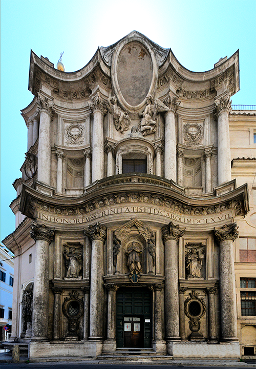
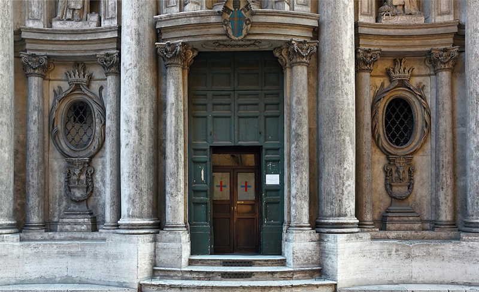
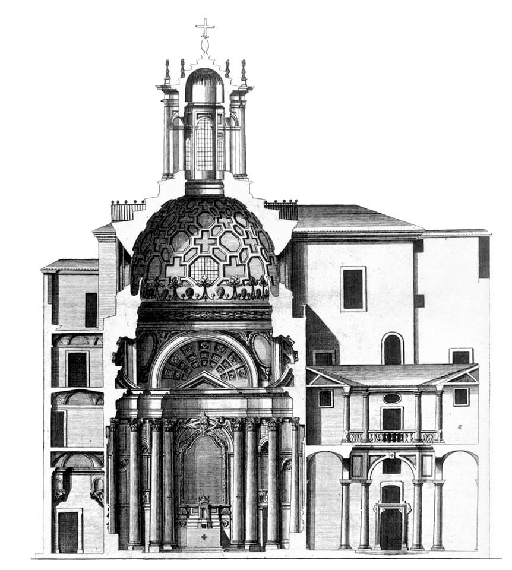
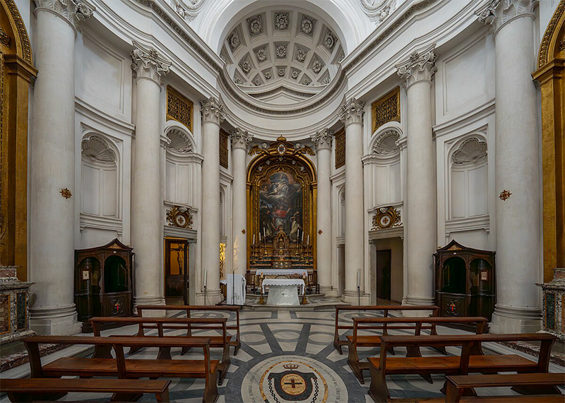
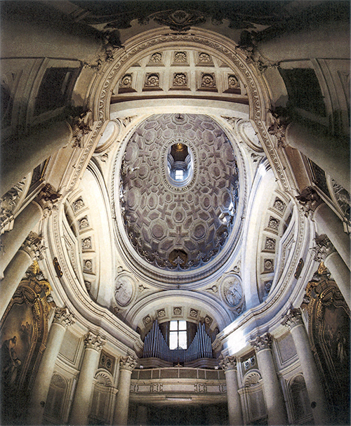
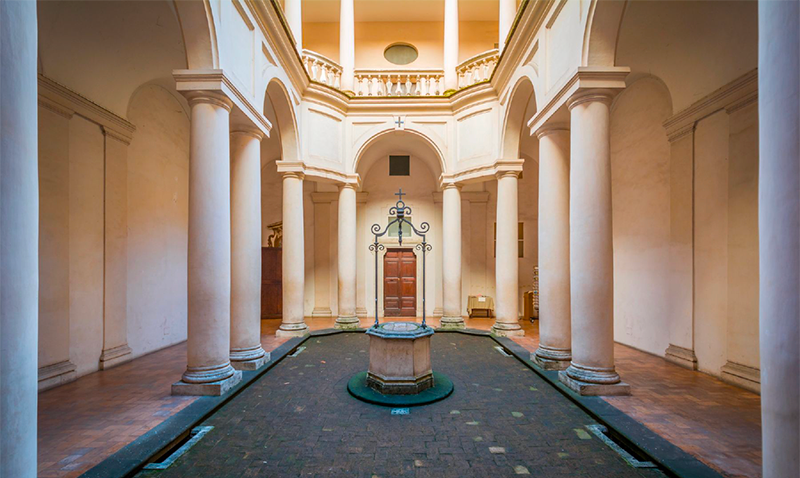
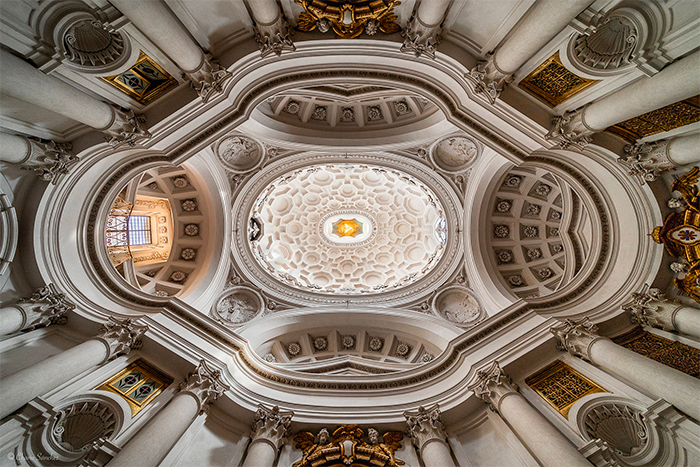
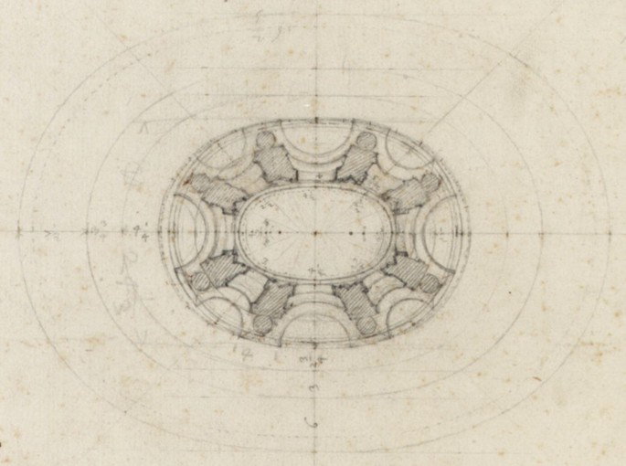
A San Carlo alle Quattro Fontane la sequenza non è una semplice somma di ambienti, ma un dispositivo di trasformazioni progressive. L’angolo dell’incrocio, irrequieto e rumoroso, stringe il passante; la facciata concava lo attira e lo trattiene, come un’inspirazione. La soglia introduce a un interno in cui pareti ondulate, colonne e nicchie non definiscono un perimetro stabile, ma un flusso: il campo viene modulato da un’oscillazione continua che fa percepire la pianta ovale come un corpo vivo. La geometria, rigorosissima, lavora per variazioni: ellissi, croci, cerchi si sovrappongono generando molteplici centri di attenzione.
Il tempo dell’attraversamento è scandito da una serie di micro-eventi: la luce che scivola sui rilievi, l’alternanza di pieni e cassettonati, la progressione delle altezze. L’energia della navata si concentra verso la cupola; la lanterna, luminosa e leggera, è il culmine di una scalata percettiva: dopo la spinta dal basso, l’apertura sospesa restituisce aria e misura. Borromini orchestra pause e accelerazioni come un compositore: ogni curva rallenta, ogni innesto spinge in avanti.
La sequenza afferma una logica più ampia: lo spazio è un processo che guida il corpo e, insieme, lo riorienta. La vicinanza tra massa muraria e leggerezza della volta produce una dinamica intensa tra peso e sospensione. Non esiste un punto privilegiato; esiste un cammino che costruisce lo sguardo. In questo modo la chiesa diventa un’esperienza temporale esatta: un racconto in cui l’ordine geometrico è messo al servizio dell’emozione misurata dell’attraversamento.
B.
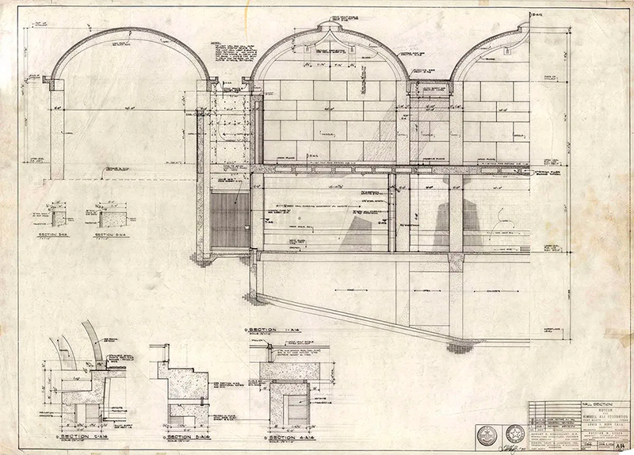
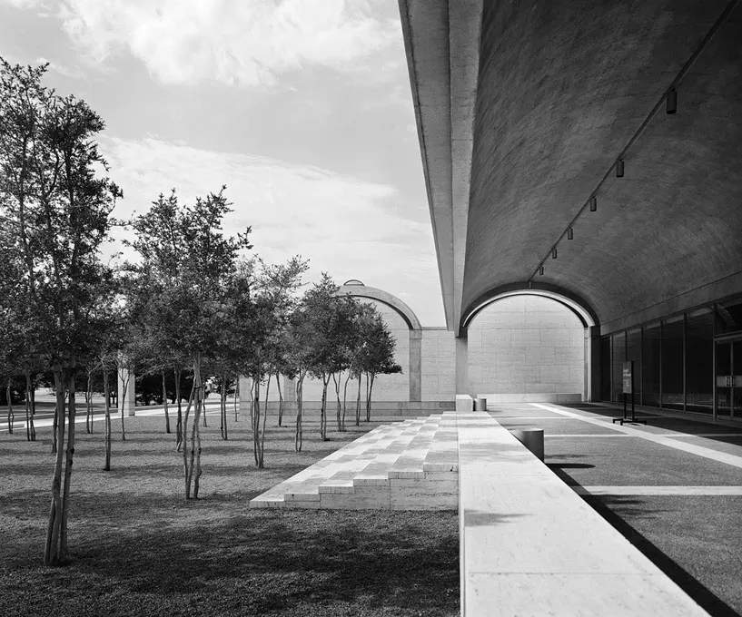
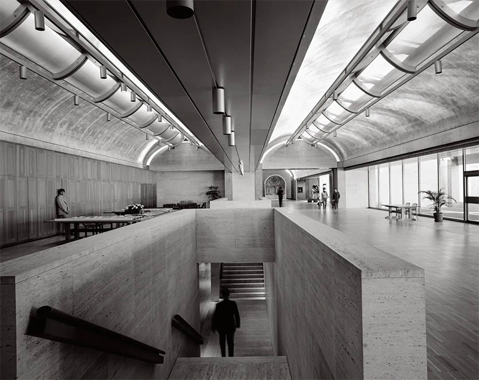
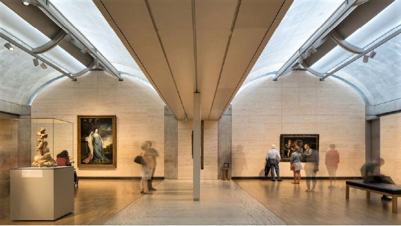
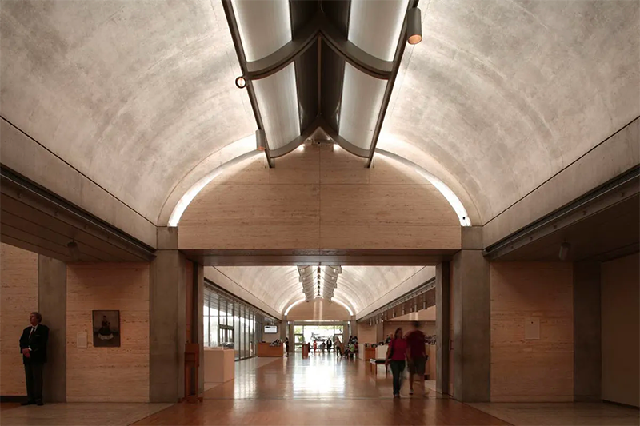
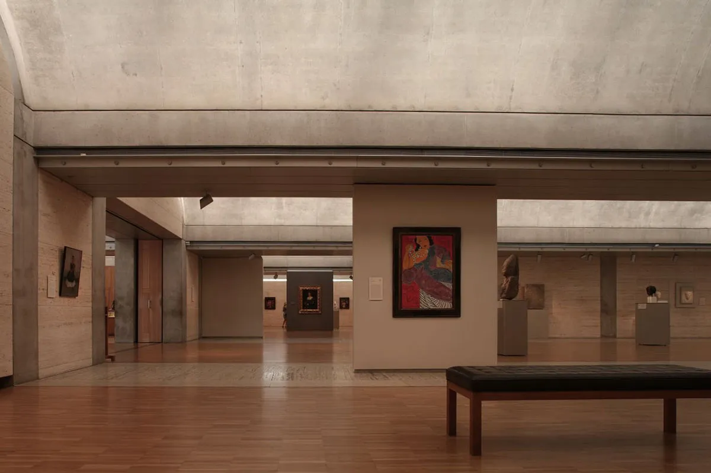
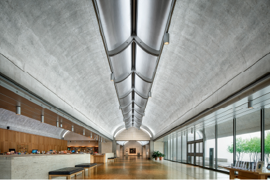
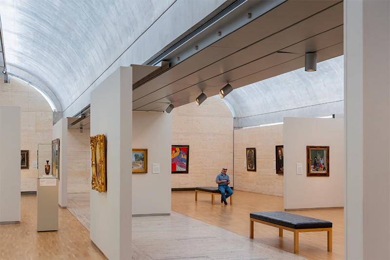
Il Kimbell Art Museum è uno dei più chiari esempi della modernità in cui l’architettura si manifesta come sequenza, non come forma statica. In Kahn lo spazio non si rivela immediatamente: procede per tappe, soglie, variazioni di luce, creando un’esperienza temporale in cui la conoscenza dell’edificio avviene camminando.
L’ingresso introduce subito il tema della compressione: un portico basso, una soglia raccolta, una penombra che costringe lo sguardo verso il punto luminoso successivo. Superato l’accesso, la sequenza si apre nella grande volta, dove la luce zenitale — filtrata attraverso i famosi schermi riflettenti in alluminio — trasforma il soffitto in un campo luminoso, dinamico e mutevole. Ogni volta non è solo un modulo strutturale, ma una “camera di luce” che definisce un episodio dello spazio, un ritmo percettivo.
Il percorso non è lineare: il visitatore è guidato da espansioni e contrazioni, da aperture diagonali, da scorci laterali che introducono pause e deviazioni. La sequenza, infatti, non è un semplice corridoio, ma una struttura narrativa: il museo si rivela per differenze, alternando ambienti introspettivi e spazi che si aprono verso il giardino.
Ne emerge un’architettura che non si lascia comprendere in un’unica immagine. Come avviene nel montaggio cinematografico, il senso si costruisce nel tempo: nella continuità tra luce e materia, nella successione delle volte, nelle soglie che modulano l’intensità percettiva.
Per questo il Kimbell Art Museum è un caso esemplare della presente scheda: dimostra che progettare sequenze significa progettare esperienze, non piante; tempi, non forme isolate.
C.
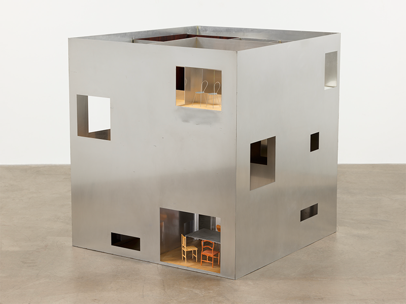
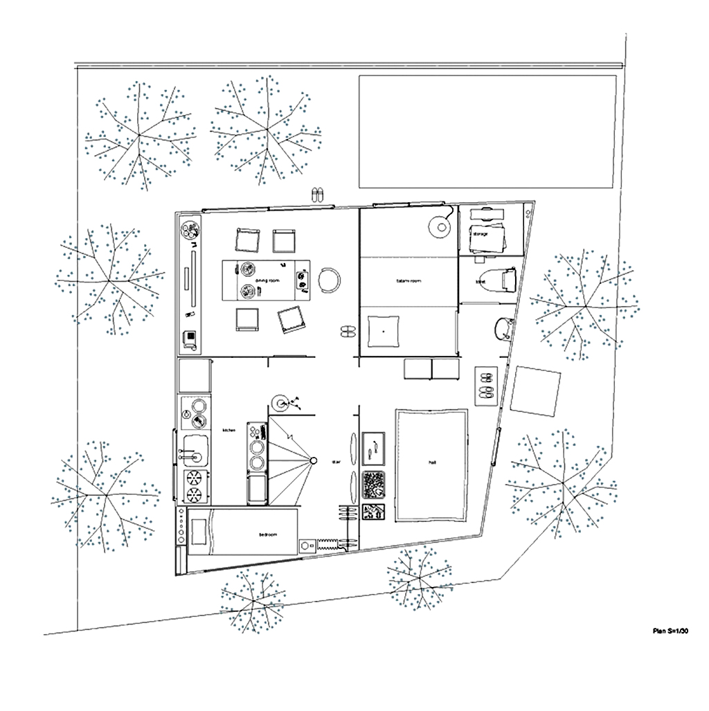
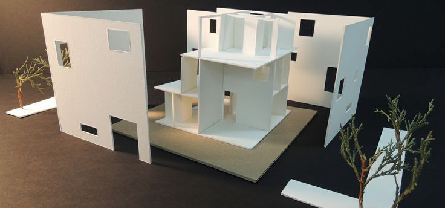
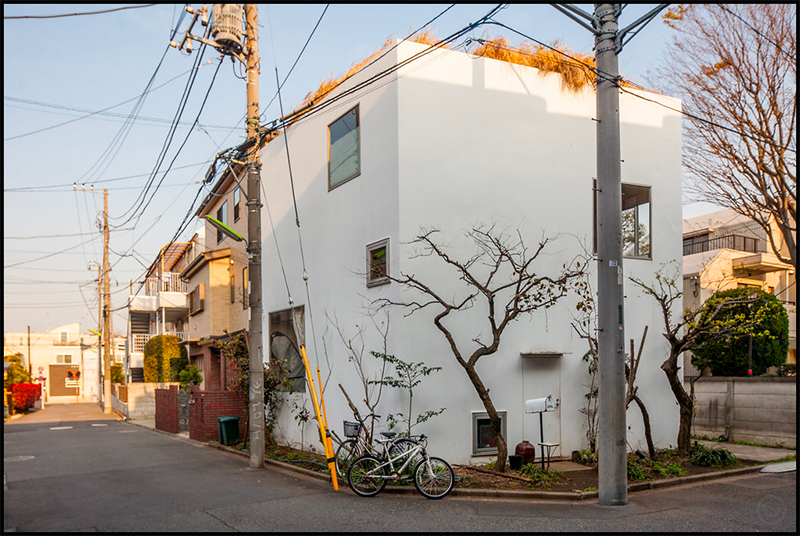
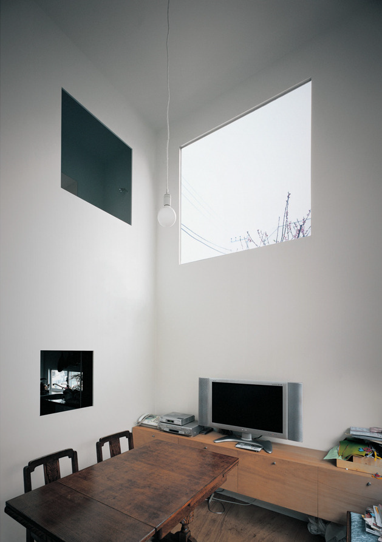
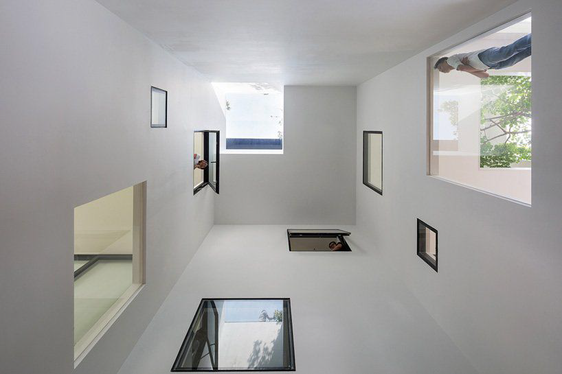
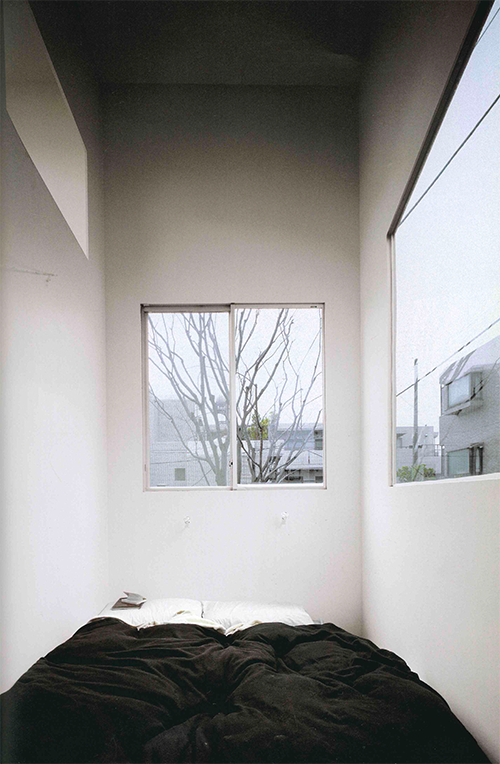
La House in a Plum Grove di Kazuyo Sejima rappresenta una delle interpretazioni più radicali e raffinate del tema della sequenza spaziale nella contemporaneità. Qui la sequenza non nasce da grandi gesti compositivi, ma da una serie di micro-eventi: variazioni di trasparenza, spessori minimi, soglie impercettibili, cambi di densità tra un ambiente e l’altro. Lo spazio diventa un fluire continuo, costruito più attraverso atmosfere che attraverso volumi.
La casa è definita da pareti sottilissime — in vetro, in policarbonato, in pannelli leggeri — che modulano costantemente la percezione. Camminare nell’abitazione significa attraversare un campo di trasparenze che si addensano o si rarefanno, facendo sì che l’interno e il giardino si confondano. Le stanze non sono unità discrete, ma episodi di una sequenza: piccole differenze di luce, leggere variazioni di quota, spostamenti di pannelli che costruiscono un percorso non lineare e sempre mutevole.
L’architettura di Sejima mostra che la sequenza può essere minima, quasi impercettibile, e tuttavia potentissima. Non c’è monumentalità, non c’è teatralità barocca: c’è una sensibilità rarefatta in cui lo spazio si conosce attraverso un continuo aggiustamento dello sguardo. L’esperienza temporale non deriva dalla profondità o dalla massa, ma dalla delicatezza con cui il corpo percepisce piccoli cambiamenti.
Per questo la House in a Plum Grove è un caso di estremo interesse in questo contesto: dimostra che lo spazio non è fissato, ma si scopre camminando — e che anche poche pareti leggere possono costruire un’architettura intensamente sequenziale.